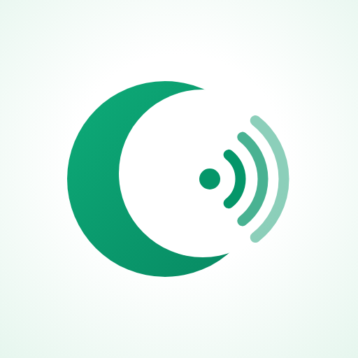
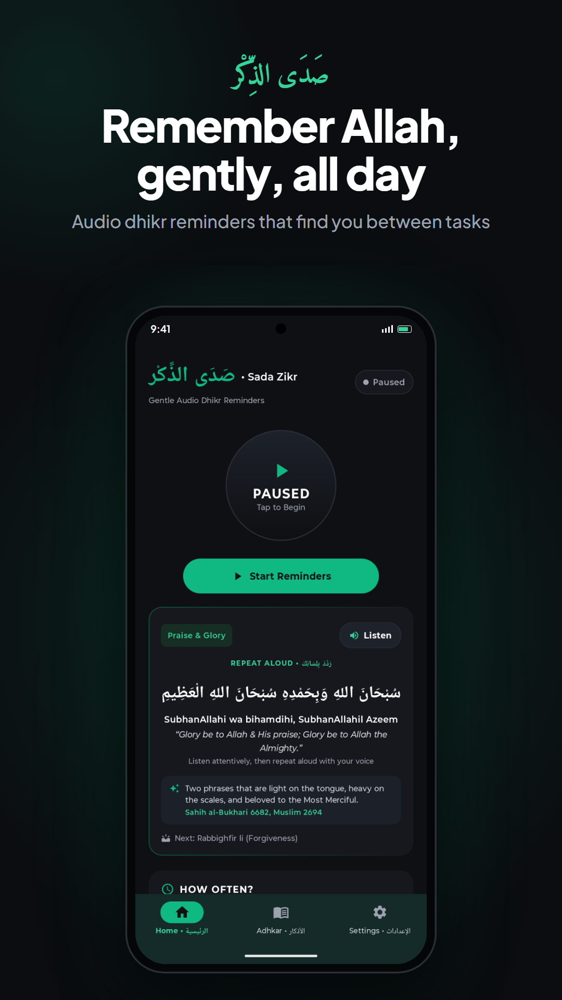
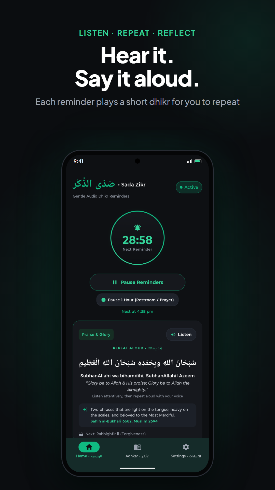
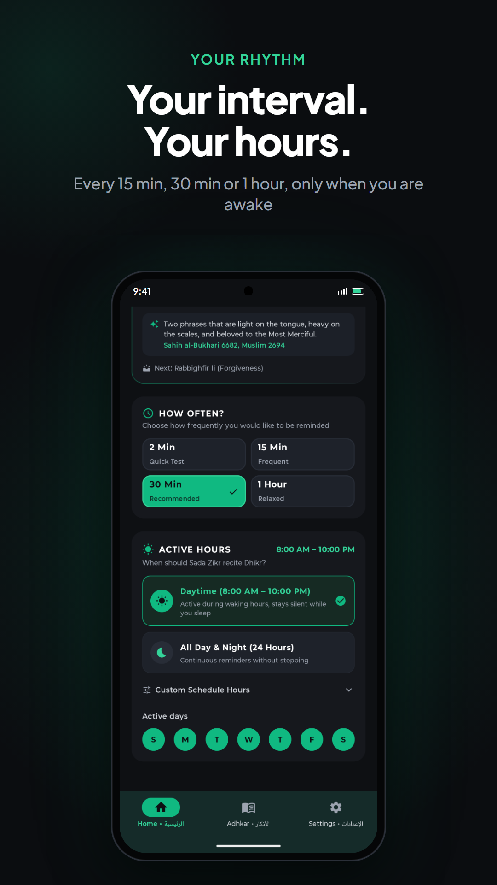

صَدَى الذِّكْر
Tap Start once. At the interval you choose, a short dhikr plays. Listen, repeat it aloud, and carry on with your day. Free, 100% offline, no ads, no account.
Get it on Google Play"Verily, in the remembrance of Allah do hearts find rest." (Qur'an 13:28)



Arabic, transliteration, virtue and hadith source for each.
English, Urdu or Hindi.
Every 15 minutes, 30 minutes or 1 hour, in the hours and days you pick.
Morning and evening adhkar at those hours, forgiveness at night, more Salawat on Fridays.
Stays quiet in silent mode, during prayer and calls, or switch to text-only reminders.
Turn any dhikr into an image card for WhatsApp Status or Instagram Stories.
Read the privacy policy.
Yes. It is free with no ads and no in-app purchases.
No. The app has no internet permission. Everything, including the audio, is on your phone.
No. Silent Mode Auto-Mute and Phone Call Protection keep it quiet, and you can choose earphones-only or text-only reminders.
Android phones. On some brands such as Xiaomi, Oppo, Vivo and Samsung, allow background activity so reminders arrive on time. The app guides you through it.